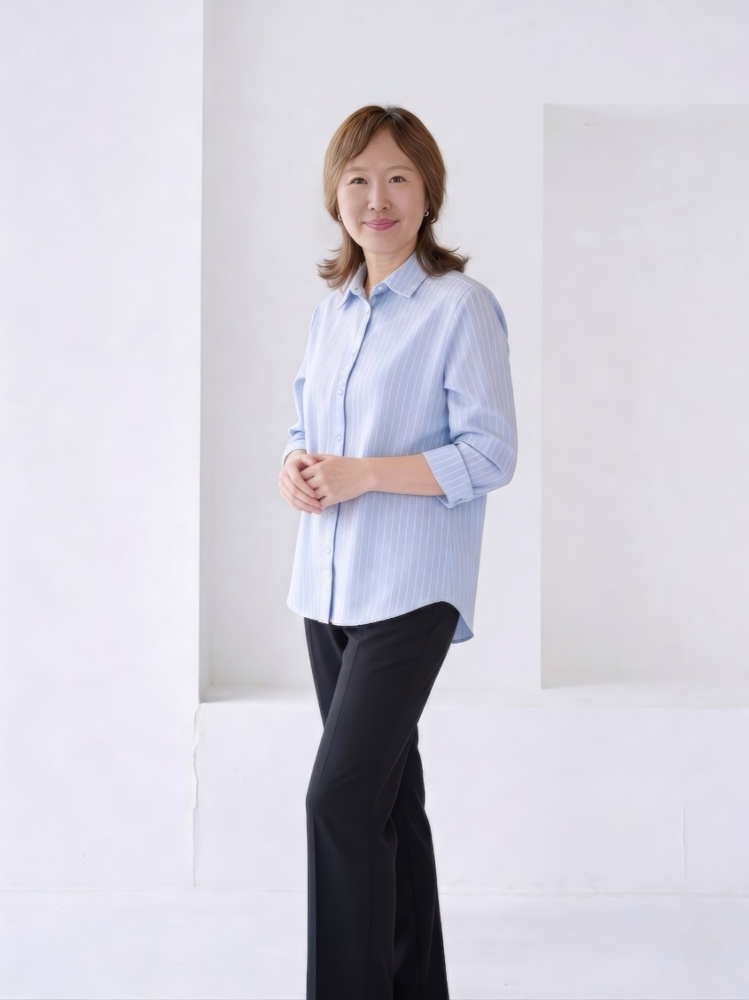

강사 소개
김현희 (Gina Hyunhee Kim)
공인 로고테라피스트이자 마음챙김 대화 전문가로서, NVC(비폭력 대화)와 빅터 프랭클의 의미 치료를 통합한 상담을 2020년부터 현재까지 진행해 왔습니다. 심각한 우울, 이혼, 자살 충동 등 고위험 상황의 내담자들을 위한 위기 개입과 함께, NVC 그룹 워크샵을 통해 참가자들이 공감적 경청과 자기 연민을 일상에서 실천할 수 있도록 돕고 있습니다.
한국외국어대학교에서 영문학을 전공하였으며, 한국 로고테라피 협회에서 로고테라피스트 자격을 취득했습니다. 시리아 난민 사역, 단기 선교(멕시코·중국·캐나다 원주민 커뮤니티) 등 다양한 현장에서 공감과 연결의 언어를 나누며 교육과 상담을 이어오고 있습니다.
공인 로고테라피스트
마음챙김 대화 전문가
NVC 퍼실리테이터
영한 이중 언어 상담